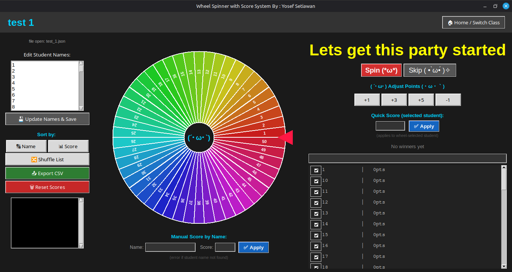
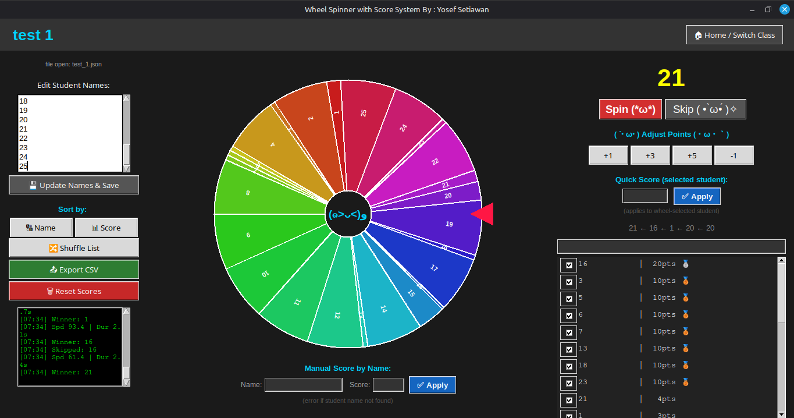

A desktop app for teachers. Spin a wheel to pick a student, award points, and let the wheel quietly give quieter students a bigger slice next time. Built with Python and Tkinter, with no extra installs.

Wheel Spinner picks a student at random and keeps score for each class you teach. You can use it to call on students, run quiz games, or reward participation. Every class is saved as its own file, so you can switch between classes in one click and your scores are still there next time.
It was made for classroom use. It has a full-screen mode for projectors, a large result name that is easy to read from the back of the room, and a dark layout that works well on a screen or projector.
Slice size depends on score. A student with fewer points gets a bigger slice, so they are more likely to be picked. A student with many points gets a thin slice. Over a lesson, this spreads turns more evenly across the room.
Students you mark as absent are removed from the wheel, and their scores are kept.
| Score | Weight | Relative slice |
|---|---|---|
| 0 pts | 1.00 | |
| 3 pts | 0.25 | |
| 9 pts | 0.10 | |
| 19 pts | 0.05 | |
| 99 pts | 0.01 |

Create, rename and delete class profiles from the home screen. Each one is a single .json file.
Each spin has a random speed and length. The face in the middle of the wheel changes as it slows down. The winning slice flashes white. Skip a result if you do not want it.
Buttons for +1, +3, +5 and −1 give points to the student the wheel picked.
Type any whole number in Quick Score to reward or deduct from the picked student.
Type a student's name and a number to change anyone's score without spinning. Names are not case-sensitive. A name that does not exist is rejected, so typos never create new students.
Untick a student in the scoreboard to take them off the wheel for the day.
Search by name, sort by name or by score, and see milestone badges next to each student.
The last five winners are shown above the scoreboard. A timestamped log records spins, winners, skips and score changes.
Paste or type one name per line and press Update Names & Save. Existing scores are kept, new names start at 0, removed names are deleted.
Export scores to CSV, shuffle the list order, or reset every score to 0 after a confirmation.
Every save also writes a timestamped copy to a backups folder. The newest 5 per class are kept.
Press F11 to go full screen for a projector or smartboard.
You need Python 3 with Tkinter. Tkinter comes with Python on Windows and macOS. On some Linux systems you install it separately. The app uses only the Python standard library, so there is nothing else to install.
python3 wheel_spinner.pyOn Debian or Ubuntu, if you see an error about tkinter:
sudo apt install python3-tkThe app saves next to the script, no matter how you launch it. Each class is a .json file. Back-ups go in backups/.
wheel_spinner/
├── wheel_spinner.py
├── Class_A.json
├── Class_B.json
└── backups/
├── Class_A_20260101_083000.json
└── ...Save files hold each student's score and attendance:
{
"students": { "Budi": 4, "Sari": 0 },
"attendance": { "Budi": true, "Sari": true }
}The settings are at the top of the script:
SCHOOL_NAME changes the title on the home screen.MAX_BACKUPS sets how many backups to keep per class.Other values are marked with comments in the code, such as the spin speed and duration, wheel colors, and badge thresholds.